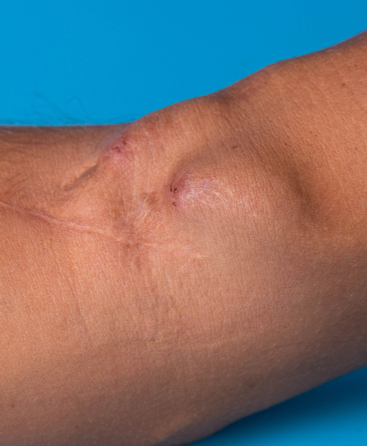

Naukowcy pomyślnie zakończyli badania nad nowym lekiem przeciw cukrzycy
Naukowcy Instytutu Endokrynologii Badawczej im. Jana Pawła II zakończyli zakrojone na dużą skalę badania kliniczne nowej generacji środków, które mogą uwolnić diabetyków typu II od przerażających skutków ubocznych choroby. Nowa technika pozwala specjalnym „przeprogramowanym” komórkom odpornościowym pomóc trzustce w przetwarzaniu hormonu insuliny.
W wyniku wieloletnich badań naukowcy dokonali przełomu w zapobieganiu powikłaniom związanym z cukrzycą. Eksperci zakończyli testowanie nowego środka , który aktywnie walczy z konsekwencjami dzięki specjalnej kombinacji składników aktywnych, które pomagają organizmowi samodzielnie zwiększyć wrażliwość tkanek na działanie insuliny. W ten sposób pacjenci z cukrzycą typu 2 przywracają procesy metaboliczne w możliwie najkrótszym czasie i są chronieni przed niebezpiecznymi konsekwencjami.
Cukrzyca jest dziś – najpoważniejszym zagrożeniem dla ludzkości, co tłumaczy się szybkim wzrostem zachorowalności i wysoką śmiertelnością. Tylko w ciągu ostatnich 20 lat stała się pierwszą przyczyną śmiertelności w populacji. W związku z tym choroba jest jednym z priorytetów, przed którymi stoją pracownicy służby zdrowia na całym świecie.
Cukrzyca - to choroba endokrynologiczna charakteryzująca się przewlekłym wzrostem poziomu cukru z powodu niezdolności organizmu do prawidłowego postrzegania i wchłaniania insuliny.
Choroba prowadzi do zaburzeń wszystkich rodzajów metabolizmu, uszkodzenia naczyń krwionośnych, układu nerwowego oraz innych narządów i układów. Rozpoznano najniebezpieczniejszą cukrzycę typu 2.
Główną przyczyną cukrzycy jest proces autoimmunologiczny spowodowany nieprawidłowym funkcjonowaniem układu odpornościowego. Organizm zaczyna wytwarzać przeciwciała, które niszczą komórki trzustki. Dlatego glukoza zaczyna krążyć we krwi, co niekorzystnie wpływa na wszystkie narządy i tkanki. Jako źródło energii organizm zaczyna wykorzystywać tłuszcze. W wyniku tego w zwiększonej ilości powstają substancje toksyczne (ciała ketonowe), zaburzony jest metabolizm tłuszczów, białek i minerałów.
Objawy cukrzycy:
- chroniczne pragnienie;
- chroniczne zmęczenie;
- zwiększone oddawanie moczu;
- suchość w ustach;
- słabość i zmęczenie;
- choroby skórne;
- ból głowy;
- zwiększony apetyt;
- swędzenie;
- senność;
- słabo gojące się rany;
- otyłość.
Taka choroba może również wystąpić z powodu:
- nadwaga;
- naruszenia wrażliwości komórek na insulinę;
- zwiększone oddawanie moczu;
- brak aktywności fizycznej;
- genetyczne predyspozycje;
- nadciśnienie tętnicze;
- palenie i alkoholizm;
- wiek ponad 40 lat.
Niebezpieczeństwo choroby polega na tym, że może nie mieć żadnych objawów klinicznych i jest przypadkowym odkryciem w rutynowych badaniach poziomu cukru we krwi.
Cukrzyca drugiego typu, w przeciwieństwie do pierwszego, rozwija się stopniowo i charakteryzuje się umiarkowanym nasileniem objawów.
Przez lata pacjenci mogą nie być świadomi obecności wysokiego poziomu cukru we krwi. Dlatego z biegiem czasu powikłania pacjenta zaczynają się pogarszać:
- choroby sercowo-naczyniowe (miażdżyca, choroba wieńcowa, zawał mięśnia sercowego);
- zmiany kończyn dolnych;
- pogorszenie widzenia, ślepota;
- neuropatia (zmniejszona wrażliwość, suchość i łuszczenie się skóry, ból i skurcze kończyn);
- upośledzona czynność nerek;
- choroba stóp (wrzody, procesy ropno-martwicze) na tle uszkodzenia nerwów obwodowych, naczyń krwionośnych, skóry, tkanek miękkich;
- różne powikłania infekcyjne (częste krostkowe zmiany skórne, grzyby paznokci itp.);
- śpiączka.
Jak więc uniknąć STRASZNYCH skutków cukrzycy?
Naukowcy zajmują się tym zagadnieniem od wielu lat. I dopiero niedawno, po trzyletniej próbie preparatu, okazało się, że 97% badanych doświadczyło znacznego spadku poziomu glukozy we krwi. Wynika to z wyjątkowego składu . Wchodząc do krwiobiegu aktywne składniki zapobiegają niszczeniu hormonu insuliny przez komórki odpornościowe, dostosowując jego pracę, zapewniając przepływ wszystkich niezbędnych substancji do organizmu pacjenta.
Więcej szczegółów na temat działania środka powie:
Aleksander Jurewicz
Diabetolog, Endokrynolog.
Doktor nauk medycznych, doktor najwyższej kategorii.
Członek American
Diabetes Association (ADA), European Association for the Study of Diabetes (EASD) oraz European
Educational Research Group for Diabetes (DESG).
Badania kliniczne wykazały, że komórki insuliny pozostają we krwi diabetyków nawet rok po zakończeniu leczenia zdrowotnego. Świadczy to nie tylko o skuteczności , ale także mówi o jego bezpieczeństwie dla organizmu.
Udowodniono, że produkt reguluje poziom cukru we krwi do normy i nie powoduje skutków ubocznych. Pacjenci z cukrzycą typu 2 nie są już zależni od wstrzyknięć insuliny. Dane te zostały uzyskane w wyniku eksperymentu naukowego, w którym wzięło udział 50 000 osób ze wskaźnikami 10 mmol/L i wyższymi.
95% badanych po przebiegu podawania glukoza nie przekraczała 3,5-5,9 mmol/l. Ponadto 93% pacjentów wykazało znaczną poprawę ogólnych wskaźników zdrowia:
- praca trzustki została przywrócona;
- ciśnienie krwi wróciło do normy;
- obniżony poziom cholesterolu we krwi;
- poprawiona regeneracja uszkodzonych komórek;
- stan skóry poprawił się, swędzenie zniknęło;
- zwiększona wydajność;
- zniknęło częste oddawanie moczu, pragnienie i suchość w ustach;
- znormalizowano metabolizm masy i lipidów;
- zmniejszyło ryzyko szeregu innych powikłań.
to innowacyjna, złożona kombinacja ekstraktów ziołowych, która stabilizuje poziom cukru i normalizuje produkcję insuliny.
Opatentowany środek nie ma odpowiedników i ma kompleksowy wpływ na organizm cukrzyka:
- natychmiast redukuje cukier do normy;
- stymuluje produkcję insuliny;
- przywraca pracę trzustki;
- pomaga w wchłanianiu glukozy;
- ma działanie hipoglikemiczne;
- poprawia proces metaboliczny w organizmie;
- promuje szybką regenerację uszkodzonych komórek skóry;
- zmniejsza ryzyko chorób sercowo-naczyniowych i niewydolności nerek.
98% pacjentów przyjmujących nowy środek poczuło się znacznie lepiej po 2 tygodniach. Naukowcy mają nadzieję, że pojawi się jak najszybciej we wszystkich placówkach medycznych. Ale w tej chwili innowacyjne środki można kupić TYLKO od producenta posiadającego wszystkie odpowiednie certyfikaty jakości. Uważaj na podróbki!
Grażyna Nikołajewicz, 57 lat
Dzień dobry! Pragnę wyrazić moją najgłębszą wdzięczność twórcy tego wspaniałego artykułu! Pokazała mi go córka. Po przeczytaniu od razu zamówiliśmy , bo choruję na cukrzycę od ponad 10 lat. Produkt biorę nieco ponad tydzień i jestem po prostu oszołomiona efektami! Cukier opadł i zaczęłam się świetnie czuć, zadyszka praktycznie zniknęła (mieszkamy na 5 piętrze, dla mnie to zawsze był problem). Za miesiąc przekażę zaplanowane badania i na pewno napiszę o moich wynikach. Ale już teraz jestem pewna, że będą znacznie lepsze niż poprzednie! Jeszcze raz dziękuję za otwarcie oczu!
Waldemar Tkaczewski, 44 lata
Trzeba dobrze jeść i ćwiczyć. Dzięki temu dożyjesz 100 lat.
Olgierd Grzegorzewski, 56 lat
Waldemar, nikt nie twierdzi, że musisz prowadzić zdrowy tryb życia, ale nikt nie jest odporny na cukrzycę! Bardzo długo wszystko było u mnie w porządku, nie patrzyłem na cukier. Wtedy zacząłem zauważać, że rana na nodze się nie goi… Teraz takie nieszczęście, chociaż całe życie uprawiałem sport, a mam cukrzycę! Lekarz powiedział, że noga zostanie amputowana. Zatem uważaj na cukier!
Wiktoria Markowska, 39 lat
Nasza medycyna to zupełnie osobny temat. Moja mama jest osobą starszą, od ponad 20 lat choruje na cukrzycę. Sami jesteśmy z małego miasteczka, ale pojechaliśmy już do stolicy do lekarzy, ale to kompletnie nie miało sensu! Każdego miesiąca wydajemy dużo pieniędzy na tabletki wspierające zdrowie i wcale nie jest lepiej. Dzięki za polecenie! Zamówimy również , zwłaszcza że jest w przystępnej cenie.
Elżbieta Maksymowicz, 37 lat
Moja mama też zaczęła mieć wrzody z powodu cukrzycy. A nowy lekarz na miejscu przepisał . W ciągu zaledwie tygodnia cukier spadł z 7,6 do 5,2. A rany zaczęły się goić. A co najważniejsze, produkt jest naturalny i odpowiedni dla każdego!
Wiktoria Grzegorzewska, 45 lat
Wiem z pierwszej ręki, jak okropna jest cukrzyca. Z obniżyłam cukier. Nie miałam szczęścia do genów, moja mama przez całe życie chorowała na cukrzycę. Umierała strasznie, jej choroba poważnie ją zniekształciła... Na całym ciele miała wrzody. Szkoda, że wcześniej nie było takiego produktu...
Grażyna Nikolewicz, 66 lat
Chyba dostałam dobrego lekarza, bo przepisał mi ten środek. Biorę to na miesiąc, cukier od razu wrócił do normy. Czuję się świetnie.
Regina Juszczenowicz, 43 lata
Takie konsekwencje są bardzo przerażające! Nie chcę mieć gangreny ani wrzodów!
Katarzyna Smolińska, 45 lat
Ach, gdyby to nie była tylko kolejna reklama, bo jest jej już tak dużo, sama nie wiem, gdzie jest prawda...
Anna Pikselowicz, 43 lata
Katarzyna, na początku też myślałam, że to reklama. Ale sąsiad przekonał mnie i postanowiłam spróbować. Chcę powiedzieć, że nie próbowałam lepszego środka na cukrzycę. W końcu przestałam być dręczona częstą potrzebą pójścia do toalety, opuchlizna ustąpiła, nawet waga zaczęła powoli opadać. No minęło wieczne pragnienie. Bardzo skuteczny środek, po prostu teraz czegoś takiego nie znajdziesz. Radzę spróbować i nie pożałujesz.
Alina Grzegorzewicz, 54 lata
Dzięki za świetny artykuł!!! Wszystkim diabetykom przyda się poczytanie go i nauczenie się czegoś nowego dla siebie. Choruję od ponad 20 lat. Chodziłam do różnych lekarzy i przyjmowałam różne leki. Zdecydowanie zamówię ten środek dla siebie, mam nadzieję, że mi też pomoże.
Paweł Wdowiec, 47 lat
Niedawno zdiagnozowano u mnie cukrzycę. Myślę, że to dziedziczne, wszyscy ze strony matki byli chorzy. Teraz przechodzę test, mam nadzieję, że wyniki będą lepsze. Swoją drogą już wczoraj zamówiłem . Boję się strasznych konsekwencji choroby...
Liliana Orłowicz, 43 lata
Jestem bardzo zadowolona z tego środka. Stan zdrowia bardzo się poprawił, sen stał się silniejszy, bóle głowy zmniejszyły się, pragnienie minęło, nogi przestały puchnąć. A co najważniejsze cukier wrócił do normy! Naprawdę skuteczny środek!
Anna Pietrowicz, 51 lat
Wygląda na to, że cierpię na tę nieszczęsną chorobę przez całe życie! Ta cukrzyca w ogóle nie daje normalnego życia. Odwiedziłam najlepszych lekarzy, wszystko na próżno. Pieniądze poszły na marne!!!!!!!!!!!! Już w nic nie wierzę. to moja ostatnia nadzieja!
Stanisław Kowal, 60 lat
Wiele razy znalazłem przydatne informacje na tej stronie. Dzięki za ciekawe artykuły.
Wiktoria, 38 lat
Zdiagnozowano u mnie cukrzycę typu 2 lata temu. Wszystkim radzę nie chorować. Niestety w tamtym czasie nie wiedziałam o tym cudownym preparacie. Może moja choroba byłaby znacznie łatwiejsza. Teraz codziennie biorę i czuję się znacznie lepiej. Cukier spadł do 5,3.
Krzysztof Larysewicz, 49 lat
terapeuta również przepisał mi ten środek. mam nadzieję, że to pomoże. Nie chce zostać bez nogi z powodu zadrapania lub jakiegoś wrzodu... Cukrzyca to niebezpieczna rzecz.
Anna Kolec, 35 lat
Znowu chodzi o styl życia. Musisz dobrze się odżywiać, monitorować wagę i regularnie odwiedzać lekarza. Wtedy nie będzie cukrzycy.
Marta Gregoryk, 41 lat
Tak, tylko kiedy biegać po lekarzach, jeśli cały dzień w pracy ginie? Kto ma czas regularnie odwiedzać wszystkich lekarzy? Nikt !! Mój mąż nawet nie zdawał sobie sprawy, że ma cukrzycę. Myślałam, że zmęczenie jest proste. A potem było coraz gorzej. Doszło do udaru... Ledwo go uratowali.
Leon Drochowski, 63 lata
Niedawno doznałem udaru mózgu. Cukrzyca go spowodowała. Potem na plecach pojawiła się straszna ropna grudka. Nic nie pomogło. Profesor przepisał nowy preparat na cukrzycę . Jak tylko zacząłem go pić, cukier wrócił do normy i grudka zaczęła mijać.
ZAMÓW TERAZ